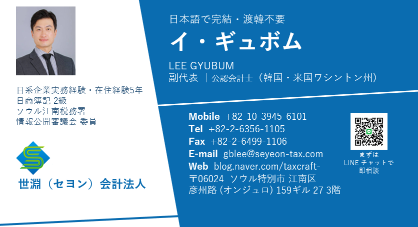

{{pageTitle}}
サービスごとに、ご相談いただきたい場面・対応範囲・事前にご用意いただく資料をまとめました。このページだけで全体をご覧いただけます。どの分野も、同じ公認会計士が日本語で対応します。
本社の締めに、日本語の数字を
韓国基準の数字を、本社が使う日本基準・IFRSの形に組み替えて、締め日までにお届けします。差異の理由も日本語で添えます。
- ·月次・四半期の連結パッケージの作成
- ·K-GAAPから日本基準・IFRSへの組替えと差異説明
- ·本社経理・本社監査法人からの質問に日本語で回答
- ·本社の締めスケジュールに合わせた提出管理
- ·本社の連結パッケージ様式と締めスケジュール
- ·直近の試算表・決算書
- ·前期の差異説明資料（あれば）
一件ずつ確認し、社内でも数字を確かめられる体制に
証憑と仕訳を会計士が一件ずつ確認し、日本語の月次レポートでお渡しします。毎月のチェック表で、社内でも異常に気づける体制をつくります。
- ·証憑の受領と仕訳（会計士が全件確認）
- ·試算表（日本語の勘定科目を併記）と前月・予算差異のコメント
- ·付加価値税（消費税）・源泉税の申告
- ·毎月の「確認すべき5項目」チェック表
- ·事業者登録証と直近の申告書
- ·売上・仕入の資料、法人口座の取引明細
- ·現在の会計データ（試算表・元帳）
月次の締めから、法人税の申告まで
K-GAAPの決算書を作り、税務調整を経て法人税を申告します。本社の数字との違いも、日本語の一覧で説明します。
- ·月次決算と試算表
- ·年次決算と決算書（K-GAAP）の作成
- ·法人税・法人地方所得税の申告と中間予納
- ·K-GAAPと日本基準・IFRSの差異説明
- ·直近の試算表・総勘定元帳
- ·前期の決算書と法人税申告書
- ·固定資産・借入金・関係会社取引の明細
駐在員の税金と保険を、整理し直す
駐在員の給与は、本社と韓国法人の負担区分、課税方式の選び方、社会保険の加入で負担が変わります。出向契約と実際の支給を確認して整理します。
- ·外国人単一税率（租特法§18の2）と通常税率の比較
- ·本社・韓国法人の負担区分と出向契約の確認
- ·日韓社会保障協定による年金の二重加入の回避
- ·給与計算・4大保険・年末調整（韓国人スタッフ分も）
- ·出向契約書・辞令
- ·本社支給分を含む給与明細
- ·赴任日・在留資格などの基本情報
経理担当がいなくても、経理が回る
支払・入金の管理から予算・資金繰り、本社からの質問対応まで、経理部門の役割をまとめてお引き受けします。社員を採用しなくても、経験のある会計士が経理責任者の役割を担います。
- ·支払・入金・経費精算の管理
- ·予算・資金繰り・コストの確認
- ·本社からの質問に日本語で回答
- ·労務・法務は提携の社労士・弁護士と連携
- ·現在の経理業務の流れ（担当・頻度）
- ·銀行口座・主な支払先の一覧
- ·本社への報告様式
対象判定から、監査報告書まで
一定規模を超えた韓国法人には、毎年の外部監査が義務です（外監法§4）。対象かどうかの判定から監査人の選任、本社監査法人とのやりとりまで日本語で対応します。
- ·監査対象の判定（資産・売上500億ウォン以上など）
- ·監査人選任のスケジュール（事業年度開始後45日以内）
- ·期中レビュー・残高確認・実査
- ·本社監査法人のグループ監査への日本語回答
- ·直近2期分の決算書
- ·従業員数・負債額が分かる資料
- ·本社監査法人のインストラクション（あれば）
法定監査がなくても、本社に確かな数字を
法定の監査対象でなくても、本社の連結パッケージを韓国の会計士に確認してほしい――そんなご依頼に応える任意監査です。範囲は本社と合意して決めます。
- ·連結パッケージ（日本基準・IFRS）の監査・レビュー
- ·本社監査法人のインストラクションに沿ったグループ監査手続
- ·合意された手続（AUP）による指定項目の確認
- ·日本語の報告書と本社監査法人への提出
- ·本社の連結パッケージ様式
- ·本社監査法人のインストラクション
- ·直近の試算表と主な契約書
監査を「受ける側」の仕組みづくり
監査で指摘を受けないよう、日々の承認・記録の流れを整えます。デロイトでK-SOXの設計・運用評価を経験した会計士が、会社の規模に合った内部統制を提案します。
- ·業務フロー（購買・販売・支払）の確認
- ·承認権限と職務分掌の整理
- ·経費・法人カード使用の点検
- ·本社監査人からの質問に日本語で回答
- ·組織図と担当者の一覧
- ·現在の承認ルール・社内規程
- ·過去の監査での指摘事項（あれば）
本社との取引に、説明できる根拠を
ロイヤリティや役務提供料など本社との取引は、税務調査で最初に確認される論点です。料率の根拠と契約書、送金時の源泉税をまとめて点検します。
- ·料率の根拠づくりと移転価格の文書化
- ·本社との契約書（ライセンス・役務提供）の確認
- ·租税条約の制限税率の適用申請
- ·国際取引に関する資料の提出
- ·本社との契約書一式
- ·本社への支払い・送金の明細
- ·前期の法人税申告書と国際取引の提出資料
進出から運営、撤退まで、同じ窓口で
現地法人・支店・連絡事務所の比較から、外国人投資申告、事業者登録、買収、撤退まで。どの段階でも、同じ公認会計士が日本語で対応します。
- ·進出形態の比較（現地法人・支店・連絡事務所）
- ·外国人投資申告・銀行口座・事業者登録
- ·韓国企業の買収と買収後の合併
- ·解散・清算と本社への送金
- ·韓国での事業計画（概要で可）
- ·本社の登記事項証明書・定款
- ·出資予定額と体制のイメージ
経理担当がいなくても、経理が回る
支払・入金の管理から予算・資金繰り、本社からの質問対応まで、経理部門の役割をまとめてお引き受けします。社員を採用しなくても、経験のある会計士が経理責任者の役割を担います。
- ·支払・入金・経費精算の管理
- ·予算・資金繰り・コストの確認
- ·本社からの質問に日本語で回答
- ·労務・法務は提携の社労士・弁護士と連携
- ·現在の経理業務の流れ（担当・頻度）
- ·銀行口座・主な支払先の一覧
- ·本社への報告様式
結論：毎月の締めから年次決算、法人税の申告まで。韓国基準（K-GAAP）の決算書を作り、本社の数字との違いも日本語で説明します。
結論：一件ずつ丁寧に確認。そして、貴社自身が数字を確かめられる体制に。
結論：本社経理が韓国の数字を読み替える手間をなくします。
結論：本社との取引は、税務調査で最初に見られる論点です。
結論：駐在員の税金と保険は、整理するだけで負担が変わることがあります。
結論：監査を「受ける側」の準備も、監査法人出身の会計士が整えます。
{{c.loss}}
{{c.fix}}
結論：まずは無料の「見落とし診断」から。費用の話は、必要なことがはっきりしてからで十分です。
 窓口・統括
イ・ギュボム
パートナー｜公認会計士（韓国・米国）
窓口・統括
イ・ギュボム
パートナー｜公認会計士（韓国・米国）
TOSS社労士事務所 代表
詳しく見る ▼
日本で5年間働きました（韓国本社から日本法人への駐在員派遣、日本企業での勤務）。日本の永住権を持ち、今も日韓を行き来しています。本社の皆さまが気にされる点、報告の作法、進め方のペースを大切にしています。
在韓日系法人・日本人個人の会計・税務・監査、本社とのやりとり
Colliers International Japan — Finance Senior Manager
米国・カナダ上場の不動産サービス企業。月次・四半期・年次決算、連結注記、本社レポーティング、税務、外部監査対応
IFRS財務諸表、本社報告、消費税・源泉税申告、資金計画、社労士対応・採用
会計監査・税務調整、IFRS連結監査、内部統制（K-SOX）評価、財務デューデリジェンス、DCF・マルチプルによるバリュエーション
日本本社が韓国子会社・投資先へ送った出資金や貸付金。契約や稟議で決めた目的どおりに使われているかを、韓国の公認会計士が現地の証憑で確認し、日本語の報告書にまとめます。
■ 3つの強み
■ 進め方
■ 本社からよくあるご質問
Q1. どのくらいの期間がかかりますか？
資料がそろってから通常2週間前後です。件数や金額が大きい場合は3〜4週間ほど。決算期は依頼が重なるため、早めのご相談をおすすめします。
Q2. 費用はどう決まりますか？
対象金額・件数・確認範囲で決まります。複数社や定期的なご依頼は個別にお見積りします。まずは無料でご相談ください。
Q3. 本社側で準備するものは？
①確認したい範囲・ポイント ②投資契約書・貸付契約書の写し ③子会社・投資先への事前のご連絡。この3点があると早く進みます。
Q4. 特定の取引だけ確認できますか？
可能です。関係者との取引や高額の支出など、ご指定の取引だけを確認することもできます。
Q5. 法定監査とは何が違いますか？
法定監査ではなく、本社と合意した範囲で行う確認です。目的に合わせて範囲を絞れるため、早く、費用も抑えて実施できます。
■ 子会社・投資先からよくあるご質問
Q1. 契約と違う使い方をしていたら？
契約に定めた返還や是正の対象になることがあります。早めにご相談いただければ、本社への説明の仕方も一緒に整理します。
Q2. 何を準備すればよいですか？
口座明細、証憑、経費精算の記録です。韓国語のままで大丈夫です。
「源泉税（원천세）」は、会社が給与や報酬を支払うときに税金を差し引き（天引き）、翌月10日までに会社が代わりに国へ納める税金です。韓国の実務では毎月10日の申告・納付をまとめて「源泉税」と呼び、同じ日に4大保険料の納付期限も来るため、一緒に管理します。
■ 「源泉税」と呼ぶ理由
■ 期限
■ 日系法人で多い論点
韓国の財産税（재산세）は、土地・建物・住宅などを所有している人に、市・区が毎年課す地方税です。日本の固定資産税に相当します。
■ 概要
■ 日本・外国法人の場合
一定規模を超えた韓国法人は、毎年会計法人による外部監査が義務になります（外監法§4）。対象判定から監査人の選任、日本の本社監査法人とのやりとりまで、デロイト出身の会計士が日本語でまとめます。
■ 対象になる会社
■ 流れ
法定の監査対象でなくても、本社の連結決算用パッケージを韓国の会計士が確認してほしい――そんなご依頼に応える任意監査です。範囲は本社と合意して決めます。
■ こんなときに
■ 進め方
韓国への進出から、拠点の運営、買収、そして撤退まで。どの段階でも、同じ公認会計士が日本語で伴走します。
■ 4つの段階
■ 撤退で注意する点
学べる点 → 利用者対応の窓口は最初に決めておくべき論点。
学べる点 → 収益主体ごとに源泉税・付加価値税（消費税）の整理が要ります。
学べる点 → ライセンスか直営かで、源泉・移転価格の処理が変わります。
結論：制度の切替えを先に知っておけば、慌てずに済みます。
・2027.1 外国人単一税率21%（案）
・2027.3 法人税率引上げ後初の申告
・2027 国際取引資料の過料明確化（案）
・国際取引の資料・誤り指摘が厳格化
・駐在員の給与設計を見直し
結論：同じ担当者が、長くお付き合いします。
日本語・韓国語・英語で承ります。お電話・LINE・メール、ご来所のいずれも歓迎です。
■ アクセス
（서울 강남구 언주로159길 27 3층・1階はカフェ「맥코이 신사」）

結論：目的で決まります。迷ったらへ。
結論：同じ利益でも、韓国の方が法人税負担は軽い。外国企業向けの優遇も重なります。
結論：日本法人が韓国法人を直接合併することは原則できません。韓国子会社を受け皿にします。
結論：「国内代理人」は、現地法人があれば一本化できます。
結論：韓国法人が申請主体。外資の法人税減免は2019年以降新規不可。
質問は一つずつ出てきます。はい／いいえで答えるだけです。
 LINE
LINE日本の会計・税務・労務について、よくいただくご質問をまとめました。質問を押すと答えが開きます。
日本の主な税務・労務の期限と祝日です。月を切り替えて確認できます。
韓国で法人を運営するうえで、よくいただくご質問です。質問を押すと答えが開きます。